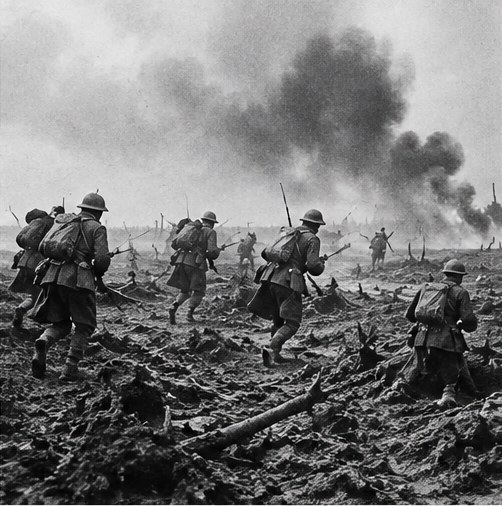
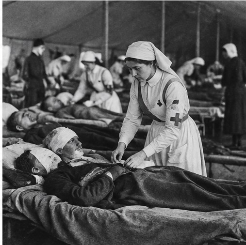

The unsettled peace
The Treaty of Versailles of 1919 imposed territorial losses, military restrictions, and reparations on Germany. It became a powerful symbol for German nationalists, though it did not make another war inevitable.
How aggression and dictatorship ignited a global conflict—and how soldiers, civilians, resistance movements, and entire societies endured six years of war that reshaped the modern world.
World War II was among the deadliest conflicts in human history. Germany’s invasion of Poland on 1 September 1939 began the European war; the conflict between Japan and China had already been underway for years. Fighting spread across Europe, Africa, Asia, the Atlantic, and the Pacific.
The war included occupation, strategic bombing, resistance, mass displacement, and genocide. The Holocaust murdered six million Jews, while Nazi Germany and its collaborators also persecuted and murdered many other groups. The war ended in 1945, leaving a changed political order and the beginning of the nuclear age.
Dates, casualty totals, and interpretations can vary by region and source. This page uses broad estimates where historians do not agree on a single figure.
No single cause explains the war. Dictatorship, expansionism, racism, economic crisis, and failed collective security interacted over many years.
The Treaty of Versailles of 1919 imposed territorial losses, military restrictions, and reparations on Germany. It became a powerful symbol for German nationalists, though it did not make another war inevitable.
The economic crisis that began in 1929 brought mass unemployment and insecurity. In several countries, extremist movements exploited fear and disillusionment; the effects differed from country to country.
Nazi Germany promoted racial hierarchy, antisemitism, rearmament, and conquest. Fascist Italy sought imperial expansion, while Japanese military leaders pursued dominance in East Asia and the Pacific.
The League of Nations lacked the power and unity to stop aggression. Japan occupied Manchuria in 1931, Italy invaded Ethiopia in 1935, and Germany repeatedly violated the postwar settlement.
The conflict in Europe began in 1939, but Japanese expansion in China had already produced years of war.
Following the Mukden Incident, Japanese forces seized control of Manchuria in northeastern China.
Fascist Italy’s conquest exposed the League of Nations’ inability to enforce collective security.
Germany and Italy supported Francisco Franco’s Nationalists; the Soviet Union supported the Republic. The conflict became a testing ground for weapons and tactics.
Nazi Germany annexed Austria, violating the post-First World War settlement.
Britain and France accepted Germany’s annexation of the Sudetenland from Czechoslovakia. Hitler occupied the rest of the Czech lands in March 1939.
Germany and the Soviet Union signed a non-aggression pact with secret protocols dividing parts of Eastern Europe into spheres of influence.
Germany attacked Poland. Britain and France declared war on Germany on 3 September.
The coalitions changed over time, and many countries contributed troops, labor, resources, intelligence, and resistance.
The principal Allied powers included Britain and its empire and Commonwealth, the Soviet Union after Germany invaded it in June 1941, the United States after December 1941, and China, which had been fighting Japan for years. France, Poland, Canada, Australia, New Zealand, India, and many others made major contributions.
The principal Axis powers were Germany, Italy, and Japan. Hungary, Romania, Bulgaria, and other governments joined or cooperated with the Axis in different ways. Finland fought the Soviet Union alongside Germany for a period but was not a formal Axis signatory in the same way as the main powers.
“Allies” and “Axis” describe wartime coalitions, not uniform societies. People within occupied countries responded in many ways, including collaboration, accommodation, resistance, and survival.
Political and military decisions affected millions. These short biographies describe each leader’s role without treating any one person as the sole cause of events.
Hitler led a racist dictatorship built around antisemitism, political repression, rearmament, and territorial conquest. His regime launched the invasion of Poland and carried out the Holocaust and other mass murders.
Churchill became prime minister during the crisis of 1940 and led Britain’s continued resistance. He worked closely with Roosevelt and Stalin while pursuing Britain’s strategic interests.
Roosevelt expanded aid to countries fighting the Axis before the United States formally entered the war. He led the country through most of its wartime mobilization and the formation of the Allied coalition.
Stalin ruled through an authoritarian system responsible for mass repression. After Germany invaded the Soviet Union in 1941, Soviet forces bore an enormous share of the land war against Nazi Germany.
Hirohito was emperor during Japan’s expansion and defeat. Historians continue to debate the extent of his personal role in particular decisions, alongside the power of military and civilian institutions.
Mussolini established a fascist dictatorship and sought a new Italian empire. Italy entered the war in 1940; military defeats and political opposition led to his removal in 1943.
After France’s defeat in 1940, de Gaulle rejected the armistice and led the Free French movement from exile. He became a central figure in restoring French authority and prestige.
Chiang led the Nationalist government during the long war against Japan. China’s war effort consumed huge resources and tied down Japanese forces, despite internal political and military strains.
Zhukov became one of the Soviet Union’s most prominent commanders, helping organize defenses at Moscow and directing major operations later in the war, including the Berlin offensive.
Eisenhower served as Supreme Allied Commander in Europe and coordinated the multinational invasion of Normandy in June 1944 and the subsequent campaign in Western Europe.
Nimitz commanded major U.S. naval operations in the Pacific, including the carrier-centered campaigns that helped shift the balance against Japan.
Attlee replaced Churchill as prime minister during the 1945 election campaign. His government helped shape Britain’s postwar reconstruction while the war against Japan was still underway.
The opening phase of the European war brought rapid German victories, but not a quick end to the conflict.
Germany used coordinated armor, aircraft, and ground forces in Poland, while the Soviet Union invaded eastern Poland on 17 September under the secret arrangements of the Nazi–Soviet Pact. Poland was partitioned and occupied. The Soviet Union then fought Finland in the Winter War of 1939–1940.
In April 1940 Germany invaded Denmark and Norway. In May it attacked the Low Countries and France. Allied forces were pushed back to Dunkirk, where a large evacuation brought hundreds of thousands of troops to Britain. France signed an armistice in June 1940; northern and western France came under German occupation, while a collaborationist government operated from Vichy.

Britain resisted German air attack, preventing Germany from gaining the air superiority it considered necessary for invasion.
The Luftwaffe attacked airfields, radar stations, aircraft factories, ports, and later cities. British radar, ground control, aircraft production, and the Royal Air Force’s pilots helped blunt the campaign. Germany postponed and ultimately abandoned its planned invasion, Operation Sea Lion.
The Blitz subjected London, Coventry, and other cities to sustained bombing. Civilians faced deaths, injuries, homelessness, blackouts, rationing, and disruption. Civil defense and evacuation changed everyday life, but bombing did not force Britain to surrender.
The war spread across deserts, seas, islands, and southeastern Europe.
Italy’s campaign in North Africa and its invasion of Greece struggled, drawing German intervention. Germany invaded Yugoslavia and Greece in April 1941. In North Africa, British Commonwealth forces and Axis troops fought over supply routes, ports, and control of Egypt and the Suez Canal.
Desert warfare depended heavily on logistics: fuel, water, spare parts, and long supply lines often mattered as much as battlefield plans. The campaign eventually culminated in the Axis defeat in North Africa in 1943, opening the way for the Allied invasion of Sicily and Italy.
The invasion opened an immense Eastern Front and a war of annihilation shaped by Nazi racial ideology.
German and allied forces advanced deep into Soviet territory, encircling large numbers of Red Army troops. The German leadership underestimated Soviet reserves, industrial capacity, geography, and the ability of Soviet forces to continue fighting. The invasion was not simply a military campaign: Nazi plans included colonization, starvation, mass shootings, and the destruction of communities.
Soviet civilians endured occupation, forced labor, hunger, deportation, and mass murder. Soviet authorities also imposed severe discipline and carried out repression. The Eastern Front became the largest and deadliest theater of the European war.
The Holocaust was the systematic, state-sponsored persecution and murder of six million European Jews by Nazi Germany and its collaborators.
Before the war, the Nazi regime stripped Jews of rights and excluded them from public life. During the war, German authorities and collaborators forced Jewish communities into ghettos, carried out mass shootings, deported people in trains, and established killing centers. The genocide radicalized across occupied Europe, especially after the invasion of the Soviet Union.
Nazi persecution and mass murder also targeted Roma and Sinti people, disabled people, Polish and Soviet civilians, Soviet prisoners of war, political opponents, gay men, and others. Their experiences differed in policy and scale; they should not be collapsed into a single category. Resistance, rescue, and survival occurred under extraordinary danger, but most victims lacked any safe escape.
For survivor testimony, documents, and carefully contextualized historical information, consult the United States Holocaust Memorial Museum and Yad Vashem.
The Pacific War connected years of Japanese aggression in Asia with a vast conflict across oceans and islands.
Japan’s full-scale war in China began in 1937, following years of expansion. Japanese forces committed widespread atrocities, including the Nanjing Massacre, and occupied large areas of China. The war caused enormous civilian suffering and forced China’s Nationalists and Communists into an uneasy united front against Japan.
On 7 December 1941 in Hawaii, Japanese forces attacked the U.S. Pacific Fleet at Pearl Harbor. Japan also attacked British and other Allied territories across the region. The United States declared war on Japan; Germany and Italy then declared war on the United States. The conflict became unmistakably global.
The Axis advance was checked in several theaters, though victory remained far from certain.
U.S. naval forces sank four Japanese fleet carriers, dealing a major blow to Japan’s carrier strength. Intelligence, timing, and carrier aviation were crucial, though Japan remained capable of fighting.
British-led forces under Bernard Montgomery defeated Axis forces in Egypt and helped turn the North African campaign in the Allies’ favor.
Urban combat, Soviet counteroffensives, and the encirclement of German forces led to a decisive Axis defeat. The battle became a symbol of the Eastern Front’s extraordinary destruction.
Anglo-American forces landed in French North Africa, pressuring Axis forces from the west while the British advanced from the east.
World War II combined industrial production with radar, codebreaking, aircraft, tanks, submarines, and long-range logistics.
Fighters, strategic bombers, dive-bombers, and carrier aircraft played different roles. Air power could support armies, attack shipping, and devastate cities, but it could not alone determine every campaign.
Radar helped detect incoming aircraft and ships. Signals intelligence and codebreaking, including work at Bletchley Park, helped the Allies understand some enemy communications.
Armored forces, trucks, artillery, and infantry had to work together. Fuel, maintenance, terrain, and coordination often limited what fast-moving formations could achieve.
German U-boats threatened Allied shipping in the Atlantic. Convoys, escorts, radar, sonar, aircraft, and intelligence gradually improved the Allies’ ability to protect supplies.
Factories, railways, merchant shipping, oil, food, and standardized production were strategic weapons. The ability to replace losses and move supplies shaped the war’s outcome.
The United States developed atomic bombs through the Manhattan Project. The bombs used on Hiroshima and Nagasaki in August 1945 caused catastrophic destruction and remain central to debates about the war’s ending and nuclear ethics.
The war was fought not only by armed forces but by workers, families, farmers, scientists, nurses, and civilians trying to survive.
Governments rationed food, fuel, clothing, and other goods. Blackouts, air raids, evacuation, and shortages became routine in many countries. Occupied populations faced harsher restrictions, forced requisitions, and hunger.
Women worked in factories, agriculture, transport, medicine, administration, intelligence, and resistance movements. Their roles varied widely, and postwar societies disagreed over how much wartime change should last.
People from colonies and dominions served in armies and supported war economies. Their service often coexisted with racism, unequal rights, and demands for independence that strengthened during and after the conflict.
Under occupation, some people joined armed resistance or clandestine networks; others collaborated, accommodated, or focused on survival. Choices were shaped by ideology, coercion, risk, and local circumstances.
Resistance took many forms, from sabotage and intelligence gathering to hiding persecuted people and preserving underground education.
Resistance groups operated in France, Poland, Yugoslavia, Greece, the Soviet Union, and elsewhere. Their effectiveness and political aims varied, and some groups fought one another as well as the occupiers. Intelligence networks and codebreakers supplied information that helped Allied operations, while deception campaigns misled German commanders about the location of planned landings.
People who hid Jews or helped others escape faced severe punishment if discovered. Rescue was important but limited relative to the scale of Nazi persecution. The experiences of resistance and rescue should be studied through specific local evidence rather than a single heroic narrative.
The invasion of Italy removed one Axis partner from the war but opened a difficult campaign through mountainous terrain.
Allied forces invaded Sicily in July 1943. Mussolini was removed from power, and Italy announced an armistice in September. German forces occupied much of the country and continued fighting alongside the Italian Social Republic, while Italian partisans resisted. Allied troops faced strong defensive positions, including at Monte Cassino, and the advance north was slow and costly.
Rome was liberated in June 1944. Fighting continued in northern Italy until the final weeks of the European war in 1945. The Italian experience included civil conflict, occupation, deportation, reprisals, and resistance as well as the conventional military campaign.
Operation Overlord opened a major Allied land front in France, supported by deception, air power, naval forces, and immense logistics.
Allied forces landed on five Normandy beaches under the codenames Utah, Omaha, Gold, Juno, and Sword. The landings were followed by weeks of difficult fighting through the Norman countryside. The Allies broke out of Normandy, liberated Paris in August, and advanced toward Germany, while German forces launched a final major offensive in the Ardennes in December 1944.
The Battle of the Bulge temporarily surprised Allied forces but failed to achieve Germany’s strategic aims. By early 1945, German forces were retreating on both the Western and Eastern Fronts, while Allied bombing and ground offensives devastated infrastructure and cities.
Soviet offensives pushed German forces out of much of Eastern Europe and into Germany itself.
After the lifting of the siege of Leningrad in January 1944 and a series of Soviet offensives, the Red Army advanced westward. Soviet troops entered Berlin in April 1945. Hitler died by suicide on 30 April as the city fell. Germany surrendered unconditionally in May; in Europe, Victory in Europe Day is commemorated on 8 May in many countries, while the Soviet Union marked victory on 9 May due to the timing of the surrender taking effect.
The Soviet advance brought liberation from Nazi occupation but was also accompanied in some places by revenge, sexual violence, forced displacement, and the imposition of Soviet political control. The end of Nazi rule did not mean a simple or uniform return to peace.
Allied forces advanced across the Pacific while bypassing some Japanese strongholds and capturing strategically important islands.
A prolonged campaign in the Solomon Islands marked a major Allied effort to halt Japanese expansion and protect routes between the United States and Australia.
Naval battles and the return of U.S. forces to the Philippines severely weakened Japanese naval power, though fighting on land continued.
U.S. forces captured a heavily defended island at great cost. Its airfields offered strategic value for operations against Japan.
One of the war’s bloodiest Pacific campaigns killed large numbers of military personnel and civilians and intensified fears about an invasion of the Japanese home islands.
Air campaigns damaged industry and transport but also killed vast numbers of civilians and destroyed urban neighborhoods.
Allied and Axis air forces bombed cities, factories, ports, and transport systems. The firebombing of Tokyo in March 1945 killed many civilians, while the bombing of Hamburg, Dresden, and other European cities caused widespread death and destruction. The military effectiveness and moral legitimacy of area bombing remain subjects of historical debate.
Air raids could disrupt production and movement, but their effects depended on targets, defenses, industrial resilience, and the wider war. Civilians often bore the greatest immediate cost, and postwar reconstruction took years.
The war ended in Asia after atomic bombings, Soviet entry into the war against Japan, and Japan’s decision to surrender.
The United States dropped an atomic bomb on Hiroshima on 6 August 1945 and on Nagasaki on 9 August. The Soviet Union declared war on Japan and invaded Japanese-held territory in Manchuria beginning on 9 August. The Japanese government announced its acceptance of surrender terms on 15 August; the formal surrender was signed on 2 September 1945.
Historians debate the relative weight of the atomic bombings, Soviet entry, Japan’s military position, and internal political decisions in bringing about surrender. The bombings killed civilians on a vast scale, with many more dying later from injuries and radiation effects. These events ushered in the nuclear age and remain a profound ethical and political issue.
Germany’s surrender in May and Japan’s surrender in September ended the Second World War, but the consequences continued.
World War II was among the deadliest conflicts in history. Estimates of total deaths vary widely, commonly reaching roughly 70–85 million, depending on which civilian deaths, famine, disease, and indirect losses are included. No single figure captures the different experiences of countries and communities.
The war left cities destroyed, economies exhausted, borders changed, and millions of people displaced.
International military tribunals prosecuted leading German and Japanese officials for crimes including aggressive war and atrocities. The trials helped shape modern international criminal law, though their scope and consistency have been debated.
The United Nations was founded in 1945 with the aim of preventing future wars and promoting international cooperation. Its structure reflected both collective aspirations and the power of the major victorious states.
Millions were displaced by occupation, forced labor, genocide, border changes, and the movement of armies. Survivors faced uncertain futures, and many never returned to their prewar homes.
European and Asian cities and industries required extensive rebuilding. The U.S.-supported Marshall Plan later aided recovery in Western Europe, while different economic and political systems took shape in the Soviet sphere.
The wartime alliance broke down as the United States and Soviet Union competed over influence, security, and political systems.
Disputes over Eastern Europe, Germany, atomic weapons, and the shape of postwar governments contributed to growing tension. Germany was divided into occupation zones, and Europe increasingly split into rival blocs. In Asia, decolonization, civil wars, and the Chinese Communist victory in 1949 reshaped the regional order.
The Cold War was not simply an automatic continuation of World War II. It grew out of wartime mistrust, ideological conflict, security fears, and decisions made by governments after the defeat of the Axis.
The war weakened European empires and accelerated demands for self-government across Asia, Africa, and the Middle East.
Colonial soldiers and workers had contributed to the Allied war effort, while wartime rhetoric about freedom exposed contradictions in imperial rule. After 1945, independence movements gained strength, though the end of empire was uneven and often violent. India and Pakistan became independent in 1947 amid partition and mass displacement; Indonesia and Vietnam fought for independence, and other struggles followed.
Public memory differs by country, but evidence, survivor testimony, and careful historical study help challenge myths and denial.
Memorials honor soldiers, civilians, resistance members, and victims of genocide. The Holocaust is documented through survivor testimony, Nazi records, photographs, physical sites, and postwar trials. Historians continue to examine occupation, collaboration, resistance, forced migration, colonial participation, and the decisions that shaped the war’s ending.
Remembering the war responsibly means distinguishing evidence from propaganda, recognizing civilian suffering across regions, and acknowledging that victims’ experiences were not interchangeable. It also means confronting the specific ideologies and institutions that enabled genocide and mass violence.
These atmospheric images are generated historical-style illustrations reused from the companion WWI project. They are not authentic photographs of World War II events.





Start with museums, archives, and research institutions; verify details against more than one source for schoolwork.
This website is an educational overview, not an exhaustive account. Death tolls vary by source and counting method. The images are generated illustrations, not documentary evidence. For academic assignments, cite the specific sources you use and distinguish established facts from historical debate.